프로젝트 이용법
프로젝트 이용법
팀의 할 일을 업무로 나누고, 누가 언제까지 무엇을 하는지 함께 보는 방법을 설명합니다. 그림의 1 같은 빨간 번호는 아래 순서 번호와 같습니다.
1프로젝트 창 열기
프로젝트는 메신저와 따로 떨어진 창에서 씁니다. 대화는 메신저 창에서, 업무 관리는 프로젝트 창에서 합니다.
창 열기
메신저 창 오른쪽 위의 과녁 모양 프로젝트 버튼을 누릅니다.
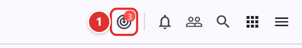
메신저 창 오른쪽 위의 프로젝트 버튼 프로젝트 창이 따로 열립니다. 작업 표시줄에도 따로 나타납니다.

화면 구성

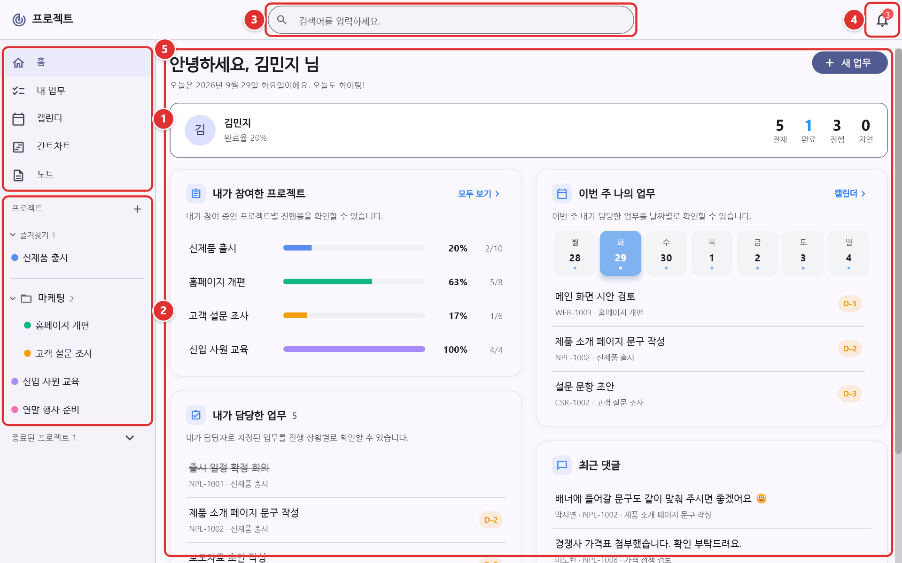
| 번호 · 이름 | 하는 일 |
|---|---|
| 1 왼쪽 메뉴 | 홈 · 내 업무 · 캘린더 · 간트차트 · 노트로 옮겨 다닙니다. |
| 2 프로젝트 목록 | 내가 참여한 프로젝트입니다. 누르면 그 프로젝트가 열립니다. +로 새 프로젝트를 만듭니다. |
| 3 업무 검색 | 업무 제목이나 번호(예: NPL-1002)로 찾습니다. |
| 4 알림 | 나와 관련된 업무 소식이 모입니다. 빨간 숫자는 안 읽은 알림 수입니다. |
| 5 내용 | 왼쪽에서 고른 화면이 나옵니다. 처음에는 홈입니다. |
왼쪽 메뉴
| 메뉴 | 보이는 것 |
|---|---|
| 홈 | 인사말과 내 업무 통계(전체 · 완료 · 진행 · 지연), 내가 참여한 프로젝트의 진행률, 내가 담당한 업무, 이번 주 나의 업무, 최근 댓글 |
| 내 업무 | 모든 프로젝트에서 내가 담당자이거나 참조자인 업무를 한 표로 모아 봅니다. |
| 캘린더 | 참여 중인 모든 프로젝트의 업무를 달력으로 봅니다. |
| 간트차트 | 참여 중인 모든 프로젝트의 업무 기간을 막대로 봅니다. |
| 노트 | 모든 프로젝트의 노트(회의록 · 자료)를 모아 봅니다. |
2프로젝트 만들기
프로젝트는 함께 하는 일 하나를 담는 그릇입니다. 예를 들어 "신제품 출시"나 "홈페이지 개편"처럼 만듭니다. 만든 사람은 그 프로젝트의 담당자가 됩니다.
따라 하기
왼쪽 프로젝트 글자 옆의 +를 누릅니다.
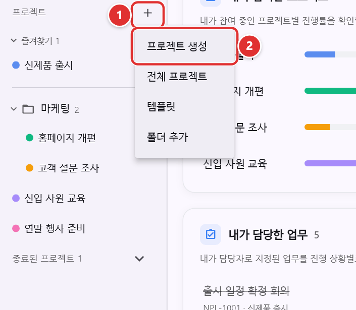
+ 메뉴 프로젝트 생성을 누릅니다. 프로젝트 생성 창이 열립니다.
프로젝트 이름을 씁니다(60자까지).
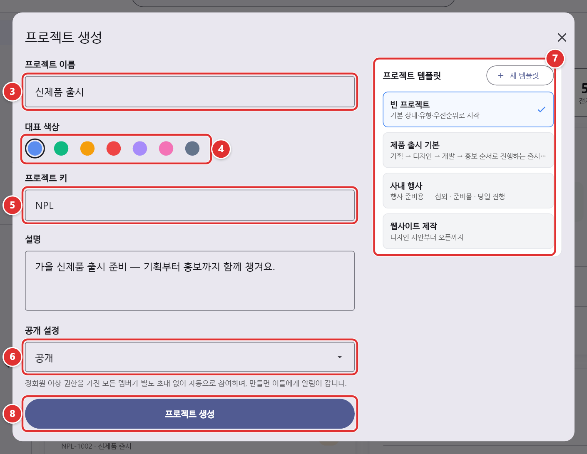
프로젝트 생성 창 대표 색상을 고릅니다. 목록과 업무 번호에 이 색이 쓰여서 프로젝트를 한눈에 구분할 수 있습니다.
프로젝트 키를 영문으로 씁니다(예: NPL). 업무 번호 앞에 붙어 NPL-1001처럼 쓰입니다.
공개 설정에서 공개 또는 비공개를 고릅니다(아래 설명).
오른쪽 프로젝트 템플릿에서 시작할 모양을 고릅니다. 잘 모르겠으면 빈 프로젝트를 그대로 두세요.
아래의 프로젝트 생성을 누릅니다. 새 프로젝트가 바로 열립니다.


공개와 비공개
| 설정 | 누가 멤버가 되나요 | 알림 |
|---|---|---|
| 공개 | 팀의 정회원 이상 모두가 초대 없이 자동으로 멤버가 됩니다. 나중에 팀에 들어온 사람도 자동으로 들어옵니다. | 프로젝트를 처음 만들 때 한 번만 팀원들에게 "공개 프로젝트를 만들었습니다" 알림이 갑니다. |
| 비공개 | 담당자가 초대한 사람만 멤버입니다. 멤버가 아니면 프로젝트가 보이지 않습니다. | 만들 때 따로 알림이 가지 않습니다. |
- 준회원은 공개 · 비공개 어느 프로젝트에도 멤버가 될 수 없습니다.
- 비공개를 나중에 공개로 바꾸면 정회원 이상이 모두 멤버가 되지만, 이때는 알림이 가지 않습니다.
- 공개를 비공개로 바꾸면 자동으로 들어왔던 사람만 빠집니다. 직접 초대한 멤버와 담당자는 남습니다.
- 만든 뒤에는 업무를 맡거나 참조된 사람처럼 그 업무와 관련된 사람만 알림을 받습니다.
템플릿으로 시작하기
템플릿은 상태 · 유형 · 우선순위 · 사용자 정의 필드 구성을 저장해 둔 것입니다. 비슷한 프로젝트를 자주 만든다면 템플릿을 쓰면 편합니다. 팀원 누구나 템플릿을 보고 쓸 수 있습니다.

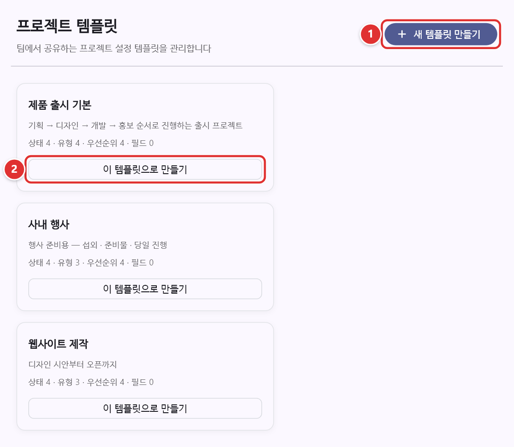
+ › 템플릿을 누르면 팀의 템플릿 목록이 나옵니다. 새로 만들려면 새 템플릿 만들기를 누릅니다.
쓰고 싶은 템플릿의 이 템플릿으로 만들기를 누르면, 그 템플릿을 골라 둔 프로젝트 생성 창이 열립니다.
3프로젝트 화면 보기
왼쪽 목록에서 프로젝트 이름을 누르면 그 프로젝트가 열립니다.
화면 구성

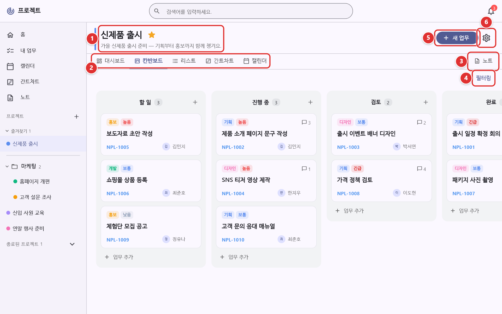
| 번호 · 이름 | 하는 일 |
|---|---|
| 1 프로젝트 머리 | 이름과 설명입니다. 이름 옆 별을 누르면 즐겨찾기에 들어갑니다. |
| 2 보기 탭 | 같은 업무를 다섯 가지 모양으로 봅니다(아래 표). |
| 3 노트 | 이 프로젝트의 노트를 창 오른쪽에 엽니다. |
| 4 필터링 | 조건에 맞는 업무만 보이게 합니다(필터링). |
| 5 새 업무 | 이 프로젝트에 업무를 만듭니다(업무 만들기). |
| 6 프로젝트 설정 | 이름 · 멤버 · 알림 · 자동화 · 노트 권한 등을 바꿉니다(프로젝트 설정). |
보기 방식 다섯 가지
| 탭 | 이렇게 보여요 |
|---|---|
| 대시보드 | 프로젝트를 처음 열면 보이는 요약입니다. 전체 업무 · 완료 · 진행 중 · 지연 숫자, 전체 완료율, 멤버별 업무현황이 나옵니다. 숫자 카드를 누르면 그 조건으로 걸러진 리스트로 옮겨 갑니다. |
| 칸반보드 | 상태(할 일 · 진행 중 · 완료 등)마다 열이 있고 업무가 카드로 놓입니다. 카드를 끌어서 상태를 바꿉니다. |
| 리스트 | 업무를 표로 봅니다. 유형 · 우선순위 · 상태 · 날짜를 표에서 바로 바꿀 수 있습니다. |
| 간트차트 | 업무 기간을 날짜 위의 막대로 봅니다. 막대를 끌어 일정을 바꿉니다. |
| 캘린더 | 월 · 주 달력에 업무를 표시합니다. 날짜를 누르면 그날의 업무 목록이 나옵니다. |
4업무 만들기
업무는 한 사람이 맡아 끝낼 수 있는 일 하나입니다. 제목만 써도 만들 수 있고, 나머지는 나중에 채워도 됩니다.
따라 하기
프로젝트 화면 오른쪽 위의 + 새 업무를 누릅니다.
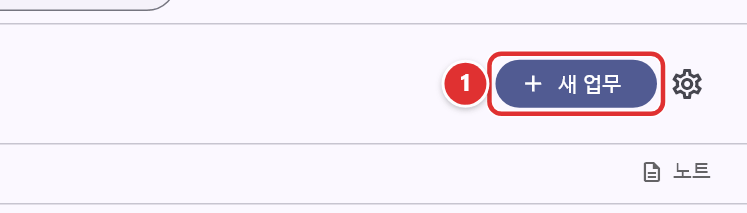
새 업무 버튼 업무 칸에 할 일을 씁니다. 예: "출시 기념 할인 쿠폰 기획"
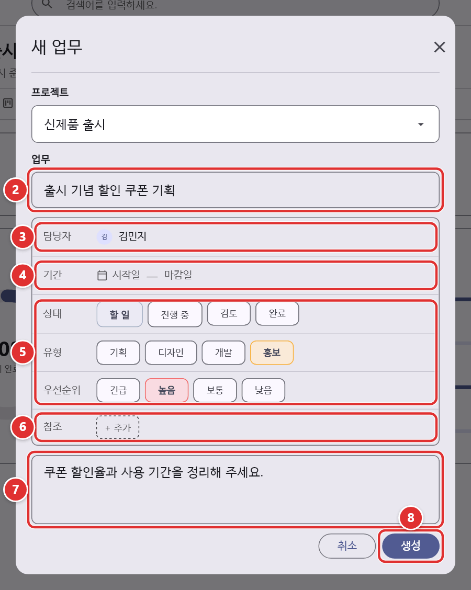
새 업무 창 담당자 칸을 눌러 맡을 사람을 고릅니다. 내가 맡을 거라면 줄 오른쪽의 나에게 할당을 누르세요.
기간 칸을 누르면 달력이 열립니다. 시작일을 누른 다음 마감일을 누릅니다.
상태 · 유형 · 우선순위에서 알맞은 칸을 하나씩 누릅니다. 고른 칸은 색이 칠해집니다.
함께 알아야 할 사람이 있으면 참조의 + 추가를 눌러 고릅니다. 참조된 사람의 내 업무에도 이 업무가 나타납니다.
필요하면 아래 칸에 설명을 씁니다.
생성을 누릅니다. 업무 제목을 써야 생성 버튼이 눌립니다.


다른 곳에서 만들기
- 칸반보드: 열 머리의 +나 열 아래 + 업무 추가를 누르면 그 상태로 시작하는 업무를 만듭니다.
- 홈 · 내 업무: 새 업무를 누르고 창 맨 위 프로젝트에서 넣을 프로젝트를 고릅니다.
- 대화방: 메시지에 마우스를 올리면 나오는 ⋮(더보기) › 업무로 등록을 누르면, 메시지 내용이 설명에 채워진 새 업무 창이 열립니다 (휴대폰은 메시지를 길게 누릅니다 — 휴대폰에서는). 비밀 대화에서는 쓸 수 없습니다.
5업무 옮기고 고치기
업무가 진행되면 상태를 바꿔 주세요. 그래야 진행률과 통계가 맞게 나옵니다.
칸반보드에서 끌어 옮기기

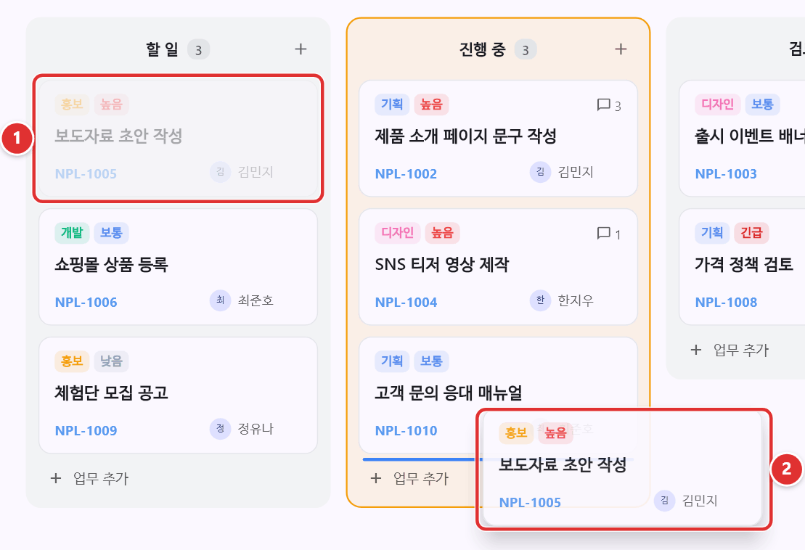
옮길 카드를 누른 채로 있습니다.
원하는 상태의 열로 끌어다 놓습니다. 놓일 자리에 파란 선이 보이고, 놓으면 그 업무의 상태가 바뀝니다.
같은 열 안에서 위아래로 끌면 순서만 바뀝니다. 카드를 한 번 누르면 업무 상세 패널이 열립니다.
리스트에서 바로 바꾸기

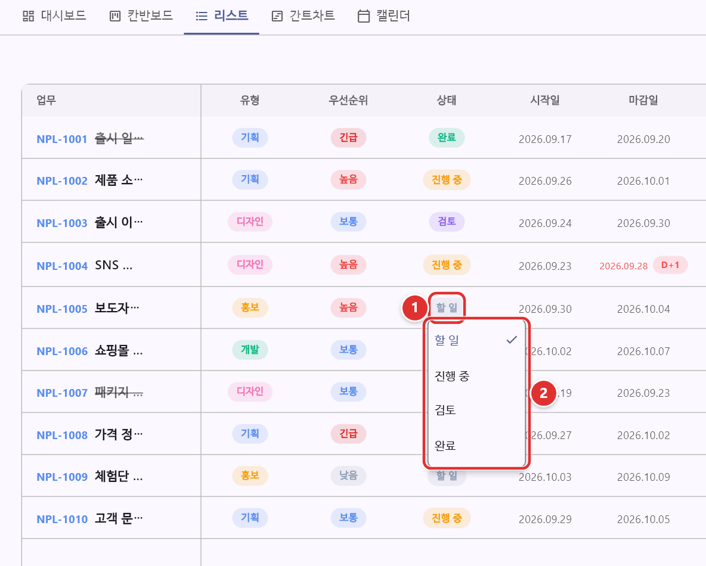
바꾸고 싶은 칸의 유형 · 우선순위 · 상태 배지를 누릅니다.
펼쳐진 목록에서 새 값을 누릅니다. 지금 값에는 체크 표시가 있습니다.
- 시작일 · 마감일 칸을 누르면 그 자리에 달력이 열립니다.
- 업무 제목에 마우스를 올리면 연필이 나옵니다. 누르면 제목을 그 자리에서 고칩니다(Enter로 저장).
- 업무와 유형 사이의 세로선을 끌면 업무 칸 폭이 바뀝니다.
간트차트 · 캘린더

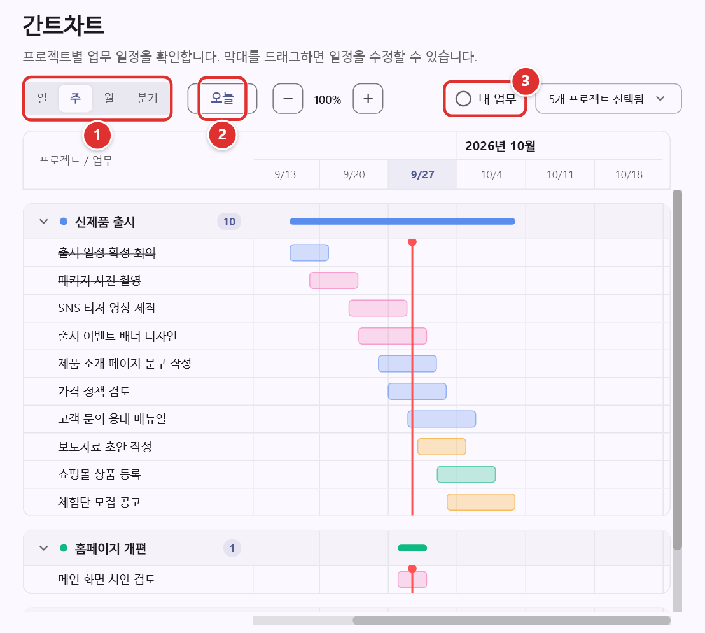
- 1 눈금을 일 · 주 · 월 · 분기 중에서 고릅니다. − · +로 줄이고 늘립니다.
- 2 오늘을 누르면 오늘 날짜로 돌아옵니다. 빨간 세로선이 오늘입니다.
- 3 내 업무를 켜면 내가 맡은 업무만 보입니다. 오른쪽 목록에서 볼 프로젝트를 고를 수 있습니다.
- 막대를 끌면 일정이 바뀝니다. 일정 변경 확인 창에서 확인을 눌러야 저장됩니다.
캘린더는 월 · 주 달력입니다. 여러 날에 걸친 업무는 하나의 막대로 보이고, 날짜를 누르면 오른쪽에 그날의 업무가 나옵니다. 왼쪽 메뉴의 캘린더 · 간트차트는 모든 프로젝트를, 프로젝트 화면의 탭은 그 프로젝트만 보여 줍니다.
6업무 상세 패널
업무를 누르면 창 오른쪽에 업무 상세 패널이 열립니다. 목록을 보면서 업무 내용을 고칠 수 있습니다. 홈 · 검색 · 알림 어디에서 업무를 눌러도 같은 패널이 열립니다.
담당자 · 기간 · 상태

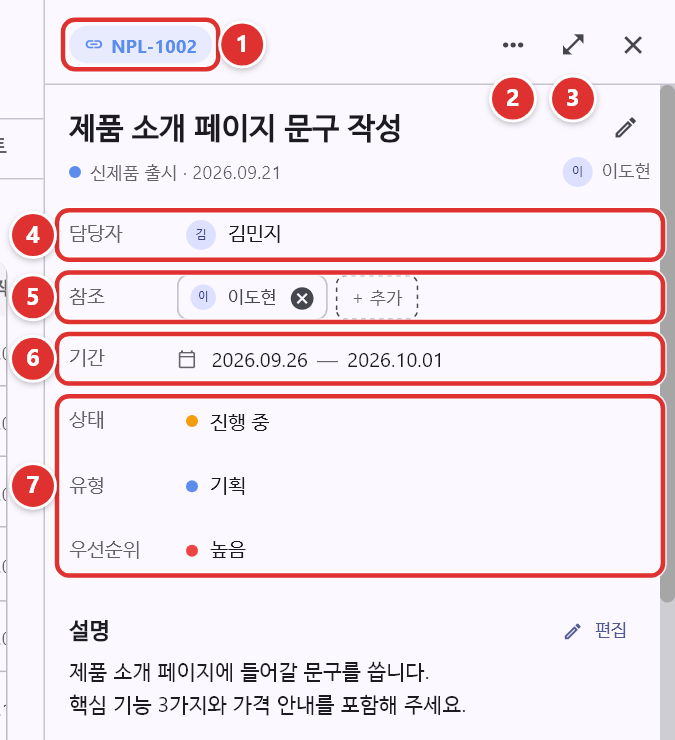
| 번호 · 이름 | 하는 일 |
|---|---|
| 1 업무 번호 | 누르면 업무 링크가 복사됩니다. 대화방이나 댓글에 붙여 넣으면 누를 수 있는 링크가 됩니다. |
| 2 업무 메뉴 ⋯ | 업무 복사 · 이동 · 보관 · 삭제(아래) |
| 3 크게 보기 | 패널을 넓혀서 봅니다. 한 번 더 누르면 원래대로 돌아갑니다. 오른쪽 ✕는 패널을 닫습니다. |
| 4 담당자 | 눌러서 바꿉니다. 나에게 할당으로 내가 맡을 수도 있습니다. |
| 5 참조 | + 추가로 사람을 더하고, 이름 옆 ✕로 뺍니다. |
| 6 기간 | 시작일 · 마감일을 눌러 달력에서 고칩니다. |
| 7 상태 · 유형 · 우선순위 | 눌러서 목록에서 고릅니다. |
담당자 · 기간 · 상태처럼 고르는 칸은 고르는 즉시 저장됩니다. 제목은 오른쪽 연필을 눌러 고친 뒤 Enter를 누르고, 설명은 설명 옆 편집을 눌러 고친 뒤 저장을 누릅니다.
체크리스트 · 하위 업무 · 댓글

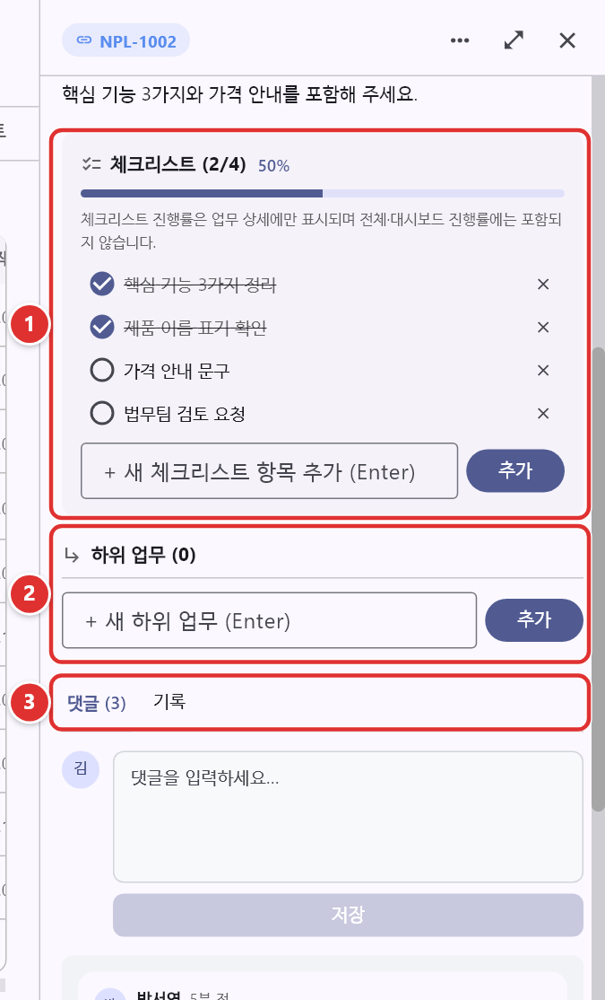
- 1 체크리스트 — 아래 칸에 할 일을 쓰고 Enter(또는 추가)를 누릅니다. 동그라미를 누르면 완료로 표시됩니다. 체크리스트 진행률은 이 패널에만 보이고 프로젝트 통계에는 들어가지 않습니다.
- 2 하위 업무 — 이 업무를 더 작게 나눌 때 씁니다. 하위 업무도 번호와 담당자를 가진 온전한 업무입니다(두 단계까지).
- 3 댓글 — 댓글 칸에 쓰고 저장을 누릅니다. 댓글마다 답글을 달 수 있습니다. 기록 탭에는 누가 언제 무엇을 바꿨는지 남습니다.
복사 · 이동 · 보관 · 삭제

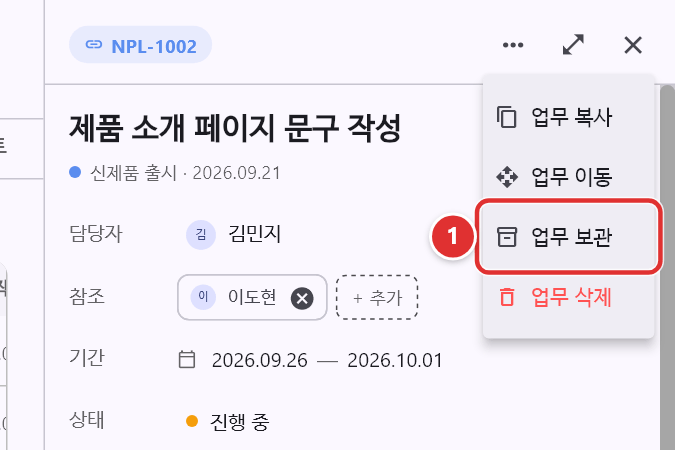
| 메뉴 | 하는 일 |
|---|---|
| 업무 복사 | 같은 업무를 하나 더 만듭니다. 제목 끝에 "(사본)"이 붙고, 참조자와 체크리스트도 복사됩니다. 댓글과 하위 업무는 복사되지 않습니다. |
| 업무 이동 | 다른 프로젝트로 옮깁니다. 업무 번호는 새 프로젝트 번호로 바뀝니다. 옮기면 비워지는 것이 있어요: 유형과 사용자 정의 필드 값은 비워지고, 하위 업무는 따라가지 않고 원래 프로젝트에 남습니다. 새 프로젝트의 멤버가 아닌 담당자 · 참조자는 빠집니다. |
| 업무 보관 1 | 끝난 업무를 목록에서 치워 둡니다. 지우는 것이 아니라서 다시 꺼낼 수 있습니다. |
| 업무 삭제 | 업무를 지웁니다. 하위 업무도 함께 지워지고 되돌릴 수 없습니다. |
7필터 · 검색 · 내 업무
필터링
업무가 많을 때 필요한 것만 골라 봅니다. 필터는 리스트 · 칸반보드 · 간트차트 · 캘린더 탭에 똑같이 걸립니다.

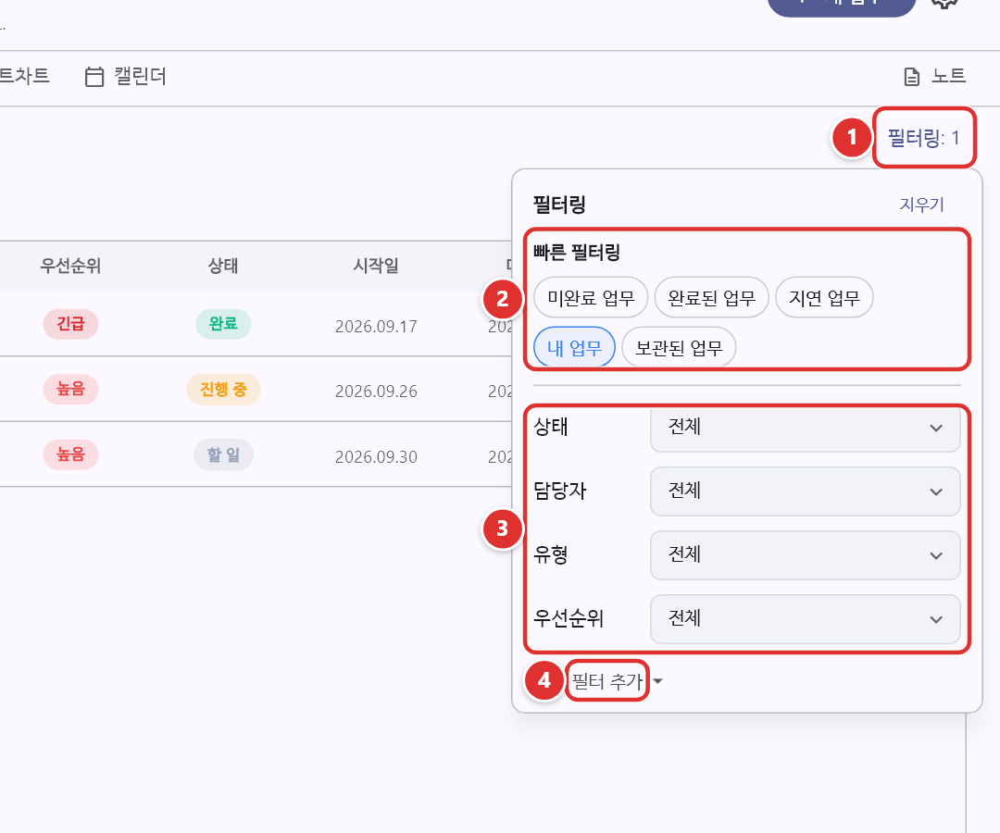
탭 줄 아래 오른쪽의 필터링을 누릅니다. 조건을 걸면 필터링: 1처럼 개수가 붙습니다.
빠른 필터링에서 자주 쓰는 조건을 한 번에 겁니다. 다시 누르면 풀립니다.
상태 · 담당자 · 유형 · 우선순위를 골라 더 좁힐 수 있습니다. 담당자에서 담당자 없음을 고르면 아직 아무도 맡지 않은 업무만 보입니다.
필터 추가로 시작일 · 마감일, 사용자 정의 필드 조건을 꺼내 씁니다.
고른 조건은 바로 목록에 반영되고, 탭 줄 아래에 작은 칩으로 남습니다. 칩의 ✕로 하나씩 빼거나, 필터링 창의 지우기로 모두 풉니다.
업무 검색
창 맨 위 가운데 검색칸에 업무 제목이나 번호(예: NPL-1005)를 씁니다. 내가 참여한 모든 프로젝트에서 찾아 목록을 펼쳐 줍니다. 결과를 누르면 그 프로젝트가 열리고 업무 상세 패널이 뜹니다.
내 업무

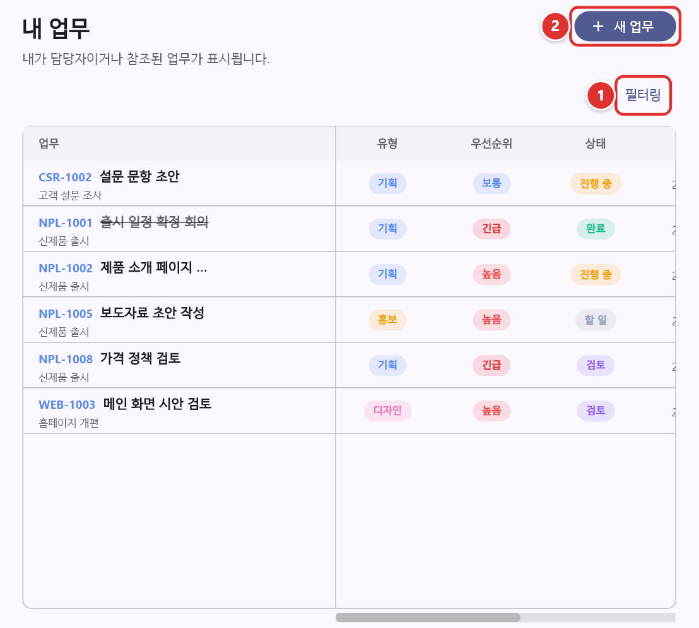
왼쪽 메뉴의 내 업무에는 모든 프로젝트에서 내가 담당자이거나 참조자인 업무가 모입니다. 제목 아래에 프로젝트 이름이 보입니다. 1 필터링으로 프로젝트 · 시작일 · 마감일 등을 걸 수 있고, 2 새 업무로 바로 업무를 만들 수 있습니다.
8즐겨찾기와 폴더
프로젝트가 많아지면 자주 쓰는 것은 즐겨찾기에 두고, 나머지는 폴더로 묶어 정리합니다. 즐겨찾기와 폴더는 내 목록에만 적용되고 다른 사람의 목록은 바뀌지 않습니다.

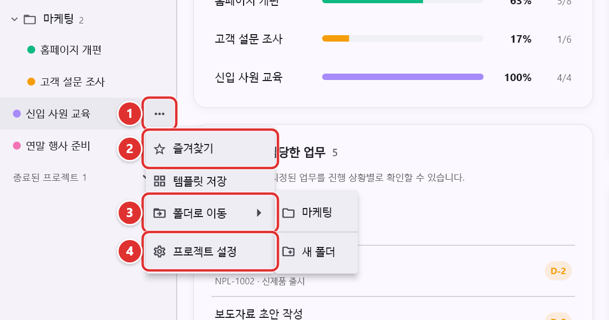
왼쪽 목록에서 프로젝트 이름에 마우스를 올리면 오른쪽에 ⋯가 나옵니다. 누릅니다.
즐겨찾기를 누르면 목록 맨 위 즐겨찾기 묶음에 들어갑니다. 빼려면 같은 자리의 즐겨찾기 해제를 누릅니다.
폴더로 이동에서 넣을 폴더를 고릅니다. 새 폴더를 누르면 폴더를 만들면서 바로 넣습니다.
프로젝트 설정은 프로젝트 담당자와 팀 소유자 · 관리자에게만 보입니다(프로젝트 설정).
- 폴더는 + › 폴더 추가로도 만듭니다.
- PC 프로젝트 이름을 마우스로 끌어 폴더 이름 위에 놓아도 폴더로 들어갑니다. 프로젝트 글자 위에 놓으면 폴더에서 빠집니다. 메뉴로 뺄 때는 ⋯ › 폴더에서 빼기를 누릅니다.
- 폴더 이름을 누르면 접히고 펼쳐집니다. 폴더 이름 옆 ⋯에서 이름 변경 · 폴더 삭제를 할 수 있습니다. 폴더를 지워도 안의 프로젝트는 그대로 남습니다.
- 종료된 프로젝트는 목록 맨 아래 종료된 프로젝트에 모입니다.
9노트
노트는 회의록 · 안내문 · 자료처럼 업무와 함께 남겨 둘 글입니다. 프로젝트 멤버가 함께 보고 씁니다.
노트 보기 · 쓰기

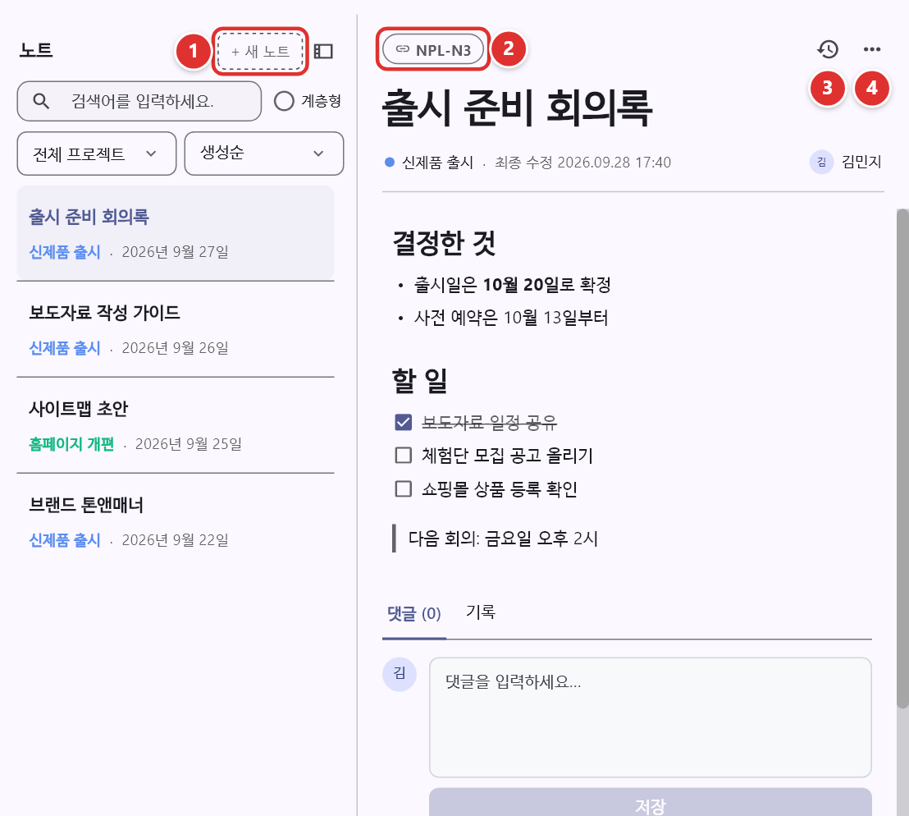
| 번호 · 이름 | 하는 일 |
|---|---|
| 1 + 새 노트 | 새 노트를 씁니다(아래 순서). |
| 2 노트 번호 | 누르면 노트 링크가 복사됩니다. 대화방에 붙여 넣으면 누를 수 있는 링크가 됩니다. |
| 3 수정 이력 | 예전 내용을 보고, 필요하면 그 버전으로 되돌립니다. |
| 4 ⋯ | 수정 · 노트 복제 · 삭제 |
- 왼쪽 메뉴의 노트는 모든 프로젝트의 노트를, 프로젝트 화면의 노트는 그 프로젝트의 노트를 보여 줍니다.
- 목록 위의 검색칸 · 프로젝트 · 정렬(생성순 · 수정순 · 제목순)로 찾습니다. 노트 아래에서는 댓글을 주고받을 수 있습니다.
새 노트 쓰기
- + 새 노트를 누릅니다.
- 맨 위에 제목을 쓰고, 아래 칸에 내용을 씁니다. 도구 막대로 글자색 · 제목 크기(H1~H3) · 굵게 · 목록 · 표 · 그림 등을 넣을 수 있습니다.
- 아래 줄에서 노트를 넣을 프로젝트를 확인하고 저장을 누릅니다.
'/'로 업무 링크 넣기
노트를 쓰다가 관련 업무를 링크로 넣을 수 있습니다. 링크를 누르면 그 업무가 바로 열립니다.

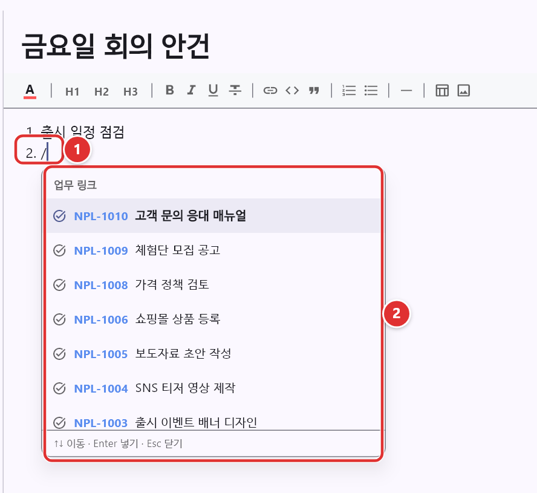
줄 맨 앞이나 띄어쓰기 뒤에서 /를 칩니다.
업무 링크 목록이 뜹니다. 이 프로젝트의 업무가 최근 것부터 나옵니다(보관한 업무는 빠집니다).
이어서 글자를 치면 목록이 좁혀집니다. 업무 번호(예: 1005)나 제목 일부를 쳐 보세요.
원하는 업무를 누르거나, ↑ ↓로 고르고 Enter를 누릅니다. NPL-1005 보도자료 초안 작성처럼 링크가 들어갑니다.
노트 수정 · 삭제 권한
프로젝트마다 누가 노트를 고치고 지울 수 있는지 정할 수 있습니다. 프로젝트 담당자 팀 소유자 · 관리자만 바꿀 수 있습니다.

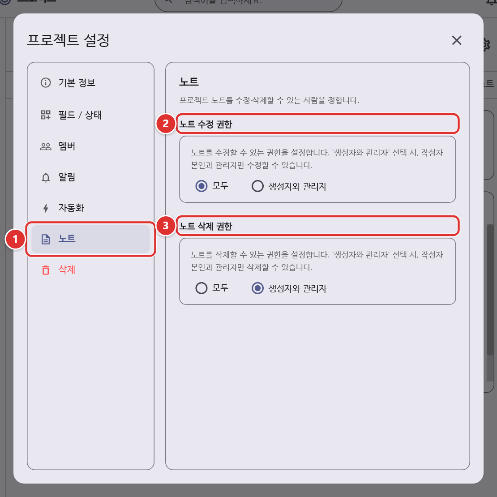
프로젝트 설정 창의 왼쪽에서 노트를 누릅니다.
노트 수정 권한에서 모두 또는 생성자와 관리자를 누릅니다.
노트 삭제 권한도 같은 방법으로 고릅니다. 누르는 즉시 저장됩니다.
| 고른 값 | 할 수 있는 사람 |
|---|---|
| 모두 | 이 프로젝트의 멤버 누구나 |
| 생성자와 관리자 | 노트를 쓴 사람 본인, 프로젝트 담당자, 팀 소유자 · 관리자 |
처음에는 수정 권한은 모두, 삭제 권한은 생성자와 관리자입니다. 그래서 따로 바꾸지 않으면 노트는 멤버 누구나 고칠 수 있지만, 지우는 것은 쓴 사람 본인과 관리자만 할 수 있습니다. 권한이 없으면 노트의 ⋯에 수정이나 삭제가 보이지 않고, 수정 이력의 이 버전으로 되돌리기도 보이지 않습니다. 댓글은 이 설정과 상관없이 쓸 수 있습니다.
10알림
나와 관련된 업무에 변화가 생기면 알림이 옵니다. 내가 한 일은 나에게 알리지 않습니다.

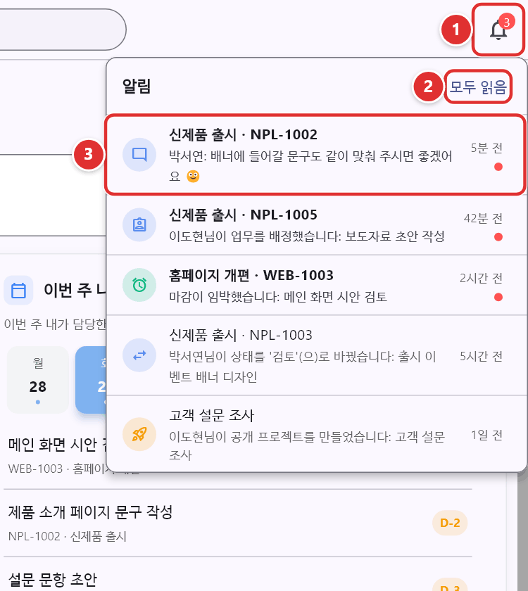
프로젝트 창 오른쪽 위의 종을 누릅니다. 빨간 숫자는 안 읽은 알림 수입니다.
모두 읽음을 누르면 전부 읽음으로 바뀝니다.
알림을 누르면 읽음으로 바뀌고 그 업무(또는 프로젝트)가 열립니다. 안 읽은 알림은 굵은 글씨와 빨간 점으로 표시됩니다.
| 이럴 때 | 받는 사람 |
|---|---|
| 업무를 배정받았을 때 · 참조자로 지정됐을 때 | 배정받은 사람 · 지정된 사람 |
| 업무의 상태 · 우선순위 · 마감일 · 유형 등이 바뀌었을 때 | 그 업무의 담당자 · 만든 사람 · 참조자 |
| 댓글이 달렸을 때 | 그 업무의 담당자 · 만든 사람 · 참조자 |
| 업무가 만들어졌을 때 | 프로젝트 담당자 |
| 업무가 삭제됐을 때 | 프로젝트 담당자와 그 업무의 담당자 · 만든 사람 · 참조자 |
| 마감이 다가올 때(마감 하루 전) | 그 업무의 담당자 |
| 공개 프로젝트가 새로 만들어졌을 때 | 팀의 정회원 이상(만든 사람 제외) |
- 앱이 켜져 있으면 화면 구석에 알림 창도 뜨고, 메신저 창의 프로젝트 버튼에도 숫자가 붙습니다.
- 알림이 너무 많으면 프로젝트 설정 › 알림의 내 설정에서 이 프로젝트 알림 끄기를 켜세요. 나에게만 적용됩니다.
- 같은 화면 위쪽의 알림 정책(어떤 종류를 보낼지)은 프로젝트 담당자와 팀 소유자 · 관리자가 정하고, 그 프로젝트의 모든 멤버에게 적용됩니다.
11프로젝트 설정
프로젝트의 이름 · 멤버 · 알림 · 자동화 · 노트 권한 등은 프로젝트 설정 창 한곳에서 바꿉니다. 설정을 바꿀 수 있는 사람은 프로젝트 담당자와 팀 소유자 · 관리자입니다.
설정 창 열기
- 프로젝트 화면 오른쪽 위의 톱니 버튼(화면 구성의 6)을 누릅니다.
- 또는 왼쪽 목록에서 프로젝트 이름 옆 ⋯ › 프로젝트 설정을 누릅니다(설정을 바꿀 수 있는 사람에게만 보입니다).
| 왼쪽 메뉴 | 바꿀 수 있는 것 |
|---|---|
| 기본 정보 | 이름 · 대표 색상 · 설명 · 공개 설정(프로젝트 키는 바꿀 수 없음) |
| 필드 / 상태 | 상태 · 유형 · 우선순위, 사용자 정의 필드, 업무 템플릿 · 새 업무 양식 |
| 멤버 | 멤버 초대 · 제외, 담당자 지정 |
| 알림 | 알림 정책, 이 프로젝트 알림 끄기(내 설정) |
| 자동화 | 자동화 규칙과 실행 기록 |
| 노트 | 노트 수정 · 삭제 권한(노트) |
| 삭제 | 프로젝트 종료 · 다시 시작, 영구 삭제 |
필드 / 상태

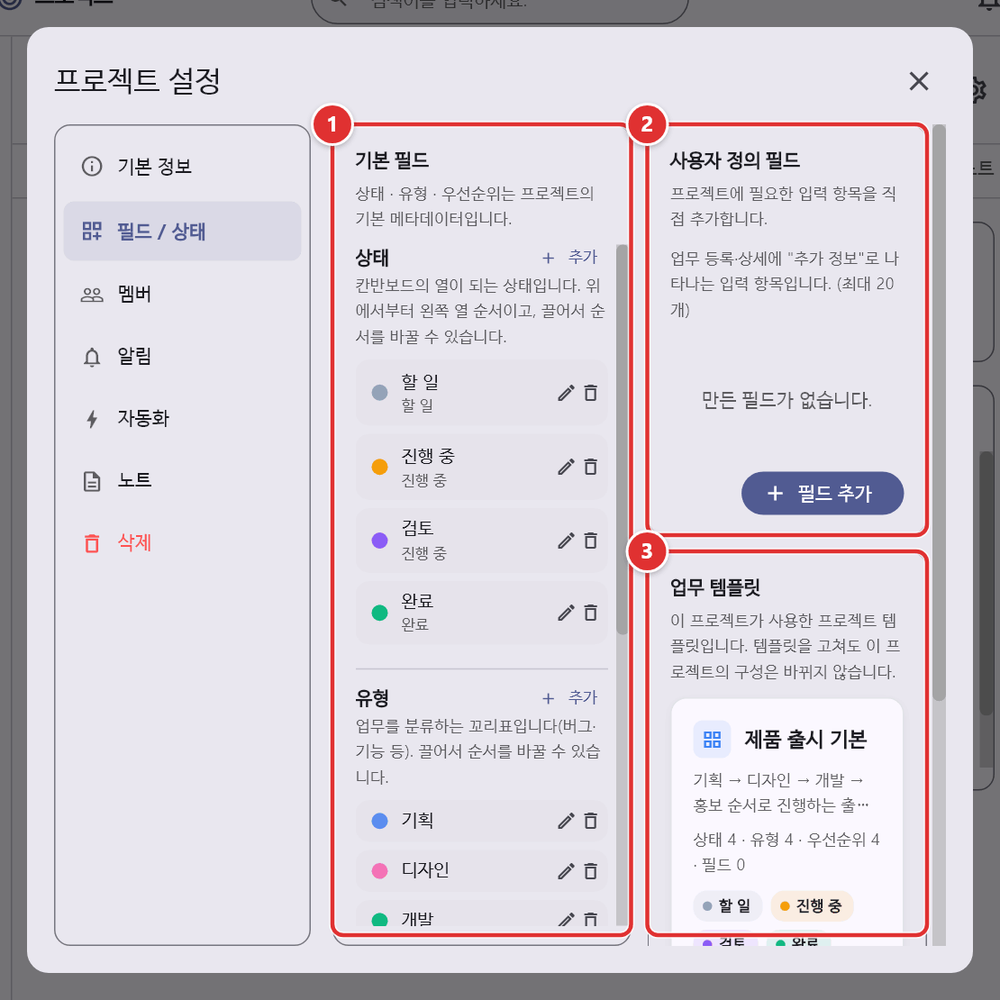
- 1 기본 필드 — 상태(칸반보드의 열) · 유형 · 우선순위를 + 추가하고, 연필로 이름과 색을 고치고, 끌어서 순서를 바꿉니다. 상태마다 할 일 · 진행 중 · 완료 중 하나의 분류가 있어서, 이름을 바꿔도 진행률은 맞게 계산됩니다.
- 2 사용자 정의 필드 — 텍스트 · 숫자 · 날짜 · 단일 선택 · 다중 선택 · 진행률 항목을 만들면(최대 20개), 업무 창의 추가 정보와 리스트 표에 나타나고 필터로도 쓸 수 있습니다.
- 3 업무 템플릿 — 템플릿을 골라 만든 프로젝트이거나, 이 프로젝트를 템플릿으로 저장한 적이 있으면 그 템플릿 카드가 보입니다. 아직 없다면 템플릿 저장 버튼이 보이고, 누르면 지금 구성을 새 템플릿으로 저장한 뒤 이 칸에 그 카드가 나타납니다 (왼쪽 목록의 ⋯ › 템플릿 저장으로 저장해도 같습니다). 그 템플릿을 지우면 다시 템플릿 저장 버튼이 보입니다. 아래쪽 새 업무 양식에서는 업무를 만들 때 양식에서 불러오기로 불러올 양식을 양식 추가로 만들고 고칩니다.
멤버

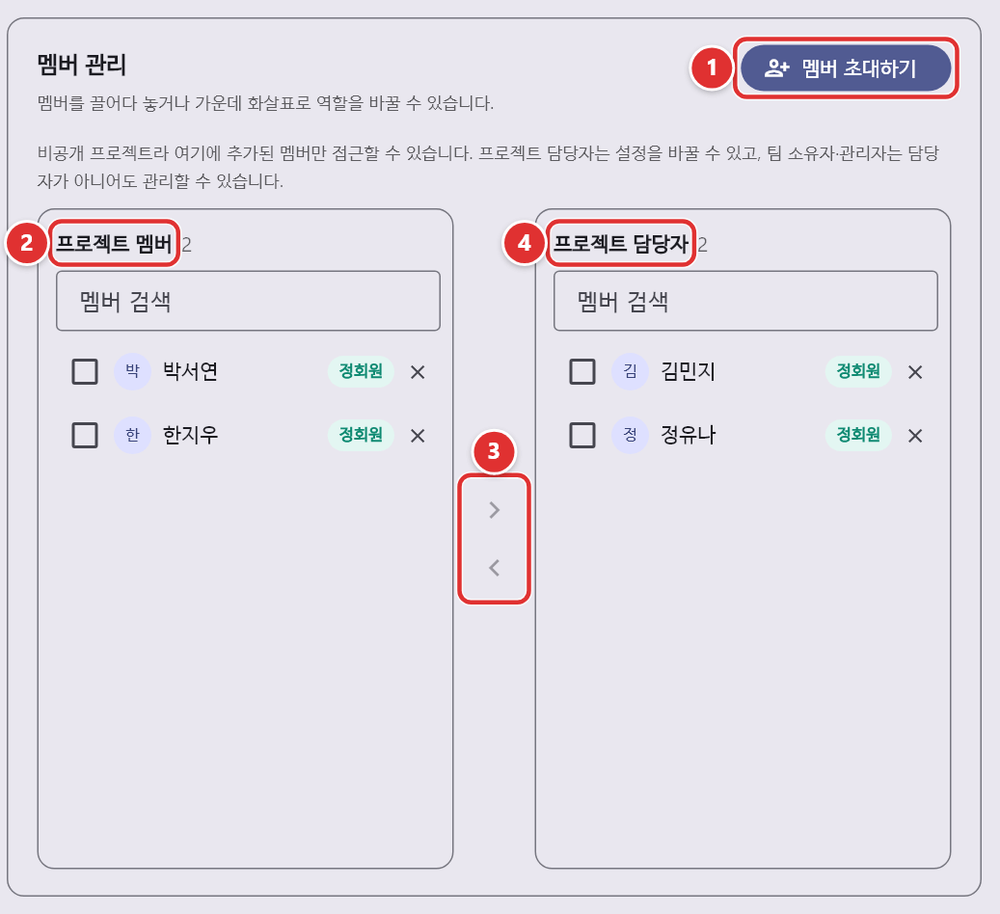
멤버 초대하기를 눌러 팀원을 고르고 추가를 누릅니다. 준회원은 목록에 나오지 않습니다.
왼쪽 프로젝트 멤버는 일반 멤버입니다. 이름 옆 ✕를 누르면 프로젝트에서 제외됩니다.
체크 상자에 표시한 뒤 가운데 화살표를 누르면 멤버 ↔ 담당자로 바뀝니다. 이름을 반대쪽으로 끌어다 놓아도 됩니다.
오른쪽 프로젝트 담당자는 설정을 바꿀 수 있는 사람입니다. 담당자는 최소 한 명 남아 있어야 합니다.
자동화 기초
자동화는 "이런 일이 생기면 → (이런 경우에만) → 이것을 해 줘"를 미리 정해 두는 기능입니다. 예를 들어 "업무가 완료되면 대화방에 알리기"를 만들어 두면 사람이 따로 알리지 않아도 됩니다.

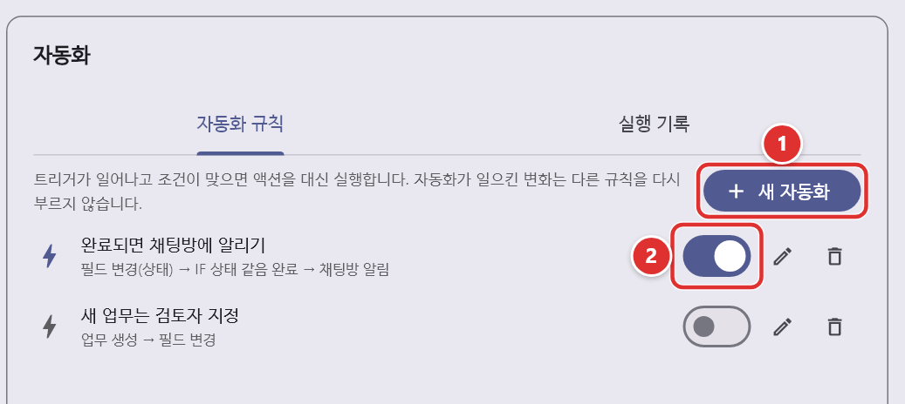
- 1 새 자동화를 누르면 편집 화면이 열립니다.
- 2 스위치로 규칙을 켜고 끕니다. 연필은 고치기, 휴지통은 삭제입니다. 실행 기록 탭에서 규칙이 언제 어떤 업무에서 실행됐는지 봅니다.

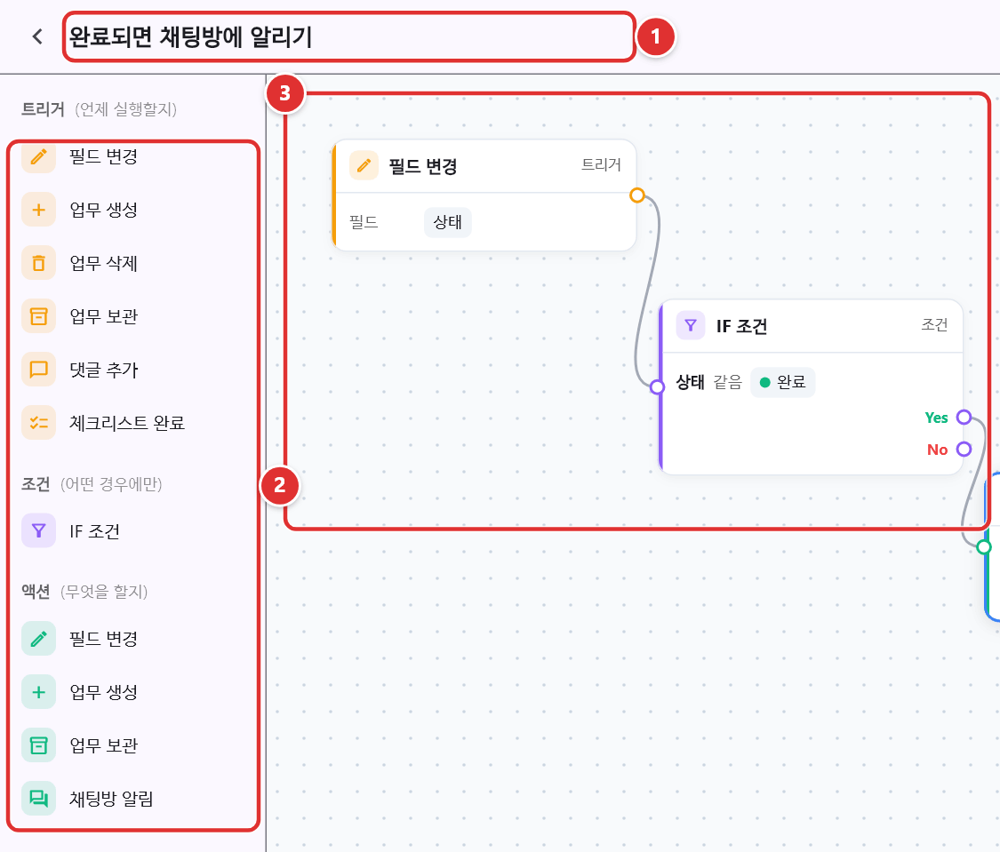
맨 위에 자동화 제목을 씁니다. 제목을 비워 두면 저장할 때 "자동화 제목을 입력하세요."라고 알려 줍니다.
왼쪽 목록에서 트리거(언제 실행할지) 하나를 가운데로 끌어다 놓습니다. 필요하면 조건(어떤 경우에만)과 액션(무엇을 할지)도 끌어다 놓습니다.
카드 오른쪽의 동그란 점을 눌러 다음 카드 왼쪽 점까지 끌면 선으로 이어집니다. IF 조건은 맞을 때(Yes)와 아닐 때(No) 갈 곳을 따로 이을 수 있습니다.

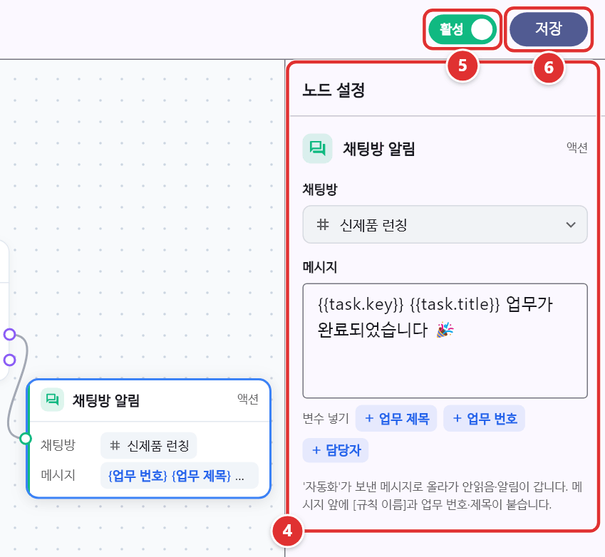
카드를 누르면 오른쪽 노드 설정에서 필드 · 값 · 대화방 · 메시지 등을 고릅니다. 메시지에는 변수 넣기의 + 업무 제목 · + 업무 번호 · + 담당자를 눌러 업무 정보를 끼워 넣을 수 있습니다.
활성 스위치가 켜져 있어야 규칙이 동작합니다.
저장을 누릅니다. 트리거는 하나만 둘 수 있고, 트리거에 이어진 액션이 하나 이상 있어야 저장됩니다.
종료 · 삭제
- 삭제 › 프로젝트 종료: 끝난 프로젝트를 닫아 둡니다. 내용은 읽을 수만 있고, 목록 맨 아래 종료된 프로젝트로 옮겨집니다. 다시 시작으로 되돌릴 수 있습니다.
- 프로젝트 영구 삭제: 업무 · 댓글 · 노트가 모두 지워지고 되돌릴 수 없습니다. 실수를 막으려고 프로젝트 이름을 그대로 입력해야 버튼이 눌립니다.
12휴대폰(안드로이드)에서는
안드로이드 휴대폰을 세로로 쓸 때는 화면이 좁아서 프로젝트 버튼이 없습니다. 칸반보드 · 노트 같은 프로젝트 화면은 PC 앱에서 쓰세요. 태블릿처럼 화면이 넓으면 PC와 같이 위쪽에 프로젝트 버튼이 보입니다.
휴대폰에서도 대화 중에 나온 할 일을 바로 업무로 만들 수 있습니다.
대화방에서 업무로 만들 메시지를 길게 누릅니다.
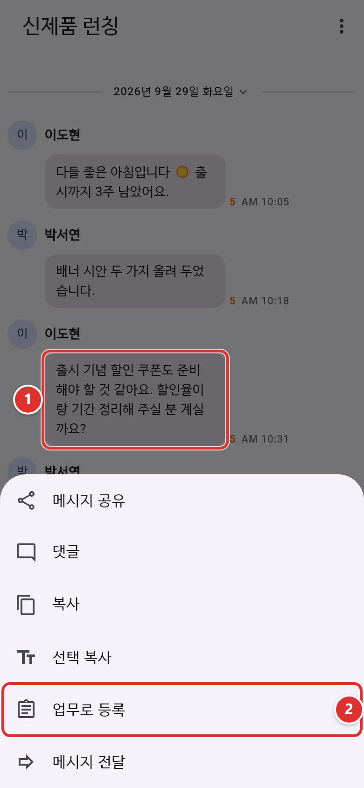
안드로이드 메시지를 길게 누른 모습 아래에서 올라온 메뉴의 업무로 등록을 누릅니다. 새 업무 창이 열립니다.
프로젝트에서 업무를 넣을 프로젝트를 고릅니다. 프로젝트를 고르면 상태 · 유형 · 우선순위 칸도 나타납니다.
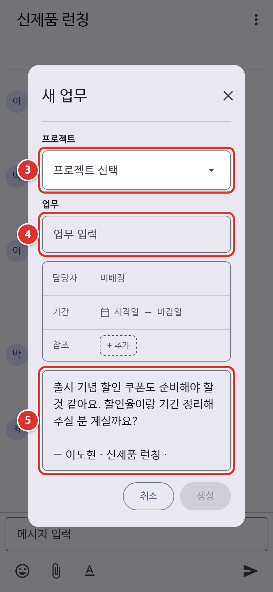
안드로이드 새 업무 창 업무 칸에 제목을 씁니다.
설명에는 메시지 내용과 보낸 사람 · 대화방 · 시각이 미리 채워져 있습니다. 필요하면 고친 뒤 생성을 누릅니다.